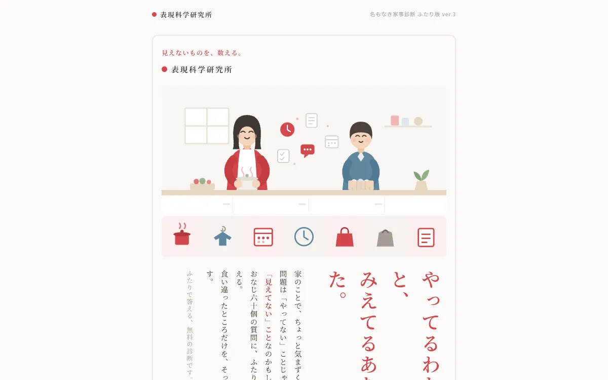
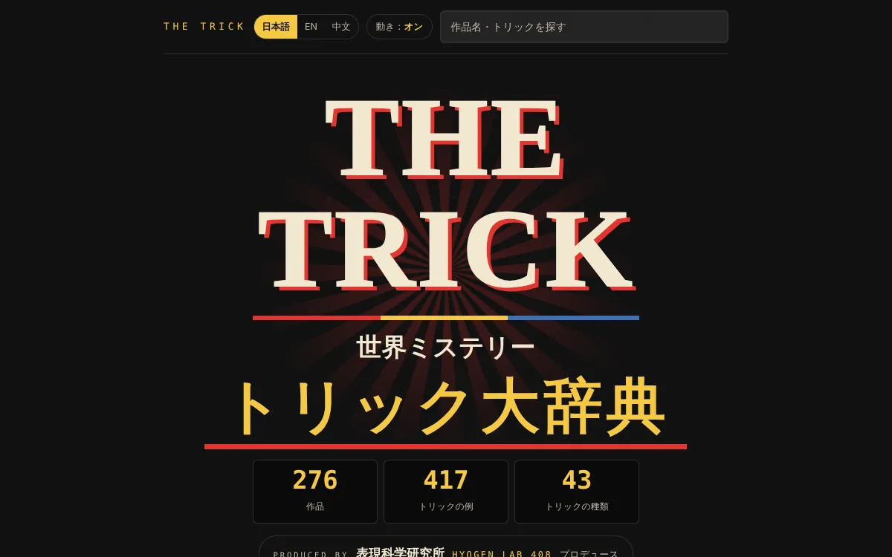

CollectionWorks
All works and records 31
Music
MUSICMaking and delivering songs: tracks, theme songs, releases.
-
Interactive
 No.02MusicIn progress
No.02MusicIn progressMUSIC DNA FLOWER
Web experience · 3D
Let it listen to a song, and a flower is born from the song's structure.
ArchiveRecords of activities
-
OngoingTheme song
Theme songs for companies and organizations
RoleProduction
KAMEON, character songs for a kindergarten, NASSE's 20th anniversary, SASSEN and more.
-
OngoingSongs
Music production and release
RoleComposition and production (YURIKA, KARINA)
Songs by YURIKA, KARINA and OM, released on Apple Music and Spotify.
Voice, Broadcast & Acting
VOICE / BROADCAST / ACTINGPerforming, narrating and broadcasting with the voice: audio works, programs, appearances.
-
Interactive
 No.01Voice, Broadcast & ActingIn progress
No.01Voice, Broadcast & ActingIn progressVOICE BLOOM
Web experience · 3D
An interactive work in which a different flower grows from the sound of each voice.
ArchiveRecords of activities
-
2020
DoneLearning-app audio
Ritsumeikan Asia Pacific University (APU) “TOBIRA”
RoleAudio production and lead voice
APU's first official app: a Japanese-learning app for incoming international students. Audio production and lead voice.
-
 2019
DoneAudio drama
2019
DoneAudio dramaSweettimes & BerryBoy
RoleOverall production
A romantic audio drama about a dating app: four femmes fatales target one high-spec single man. No. 3 in Japan in the iTunes Spoken Word category.
-
 OngoingPodcast
OngoingPodcastPodcast “Ryomagumi”
RolePlanning and production
A podcast presented by BCS Japan. The first guest was Kojiro Shiraishi.
Image, Vision & Space
IMAGE / VISION / SPACEMaking images and visible things: video, direction, spaces.
-
Interactive
 No.06Image, Vision & SpaceTrial version
No.06Image, Vision & SpaceTrial versionSUN & MOON
Cards · Web experience
Choose one sun card and one moon card, and a piece written for that pair opens.
ArchiveRecords of activities
-
2024
DoneLecture video
Lecture by Junki Yoshida
RoleDirection, video editing, audio editing
A lecture by Junki Yoshida, chairman and CEO of the Yoshida Group, at the Kitakyushu City Commerce and Trade Hall.
Story, Publishing & Games
STORY / PUBLISHING / GAMESWriting stories, making books, turning them into something playable: books, dictionaries, games.
-
Interactive
 No.03Story, Publishing & GamesIn progress
No.03Story, Publishing & GamesIn progressThis Testimony Is a Lie.
Game · Web experience
A single-player mystery game: find contradictions in testimonies to get closer to the truth. Set in the Kitakyushu Science and Research Park, Hibikino.
-
Interactive
 No.05Story, Publishing & GamesIn progress
No.05Story, Publishing & GamesIn progressDictionary of Human-speak
Dictionary · Web experience
A dictionary of what humans are really doing with words. Volume 1 of the web edition, read by turning pages.
ArchiveRecords of activities
-
2025
DoneBooks
Books: “Fūshikaden, Freely Translated” and more
RoleAuthor
Zeami, 700 years ago, on using the voice without saying it all. Other books include “Entertainment and Science” and “The Science of Sense” (titles translated; books in Japanese).
Education & Dialogue
EDUCATION / DIALOGUETeaching and facing people: lessons, classes, courses, tools for dialogue.
-
Interactive
 No.09Education & DialogueComplete
No.09Education & DialogueCompleteNameless Chores Check — Solo Edition
Web check
A check you answer alone: home tasks broken into 312 items, showing how much you carry and your type of sharing.
-
Interactive

No.10Education & DialogueCompleteNameless Chores Check — Duo Edition
Web check
Two people answer the same 60 questions separately, and only the points where their views of the housework split are listed. Subtitle: “Are you doing it? Can you see it?”
ArchiveRecords of activities
-
2022
DoneHands-on workshop
PTA Kids Festa: voice-acting dubbing experience
Organized by the Kitakyushu City PTA Council. For elementary and junior high students: five 1-hour sessions, 10 children each.
-
 2021
DoneClass
2021
DoneClassVoice-acting classes at a public school (featured on NHK)
A class on expression using the voice (a voice-acting experience) at a public elementary school, featured on NHK news as “a job experience popular with children.”
-
2020
DoneLecture
Kids Challenge Expo
RoleLecture on “expression” and teaching video editing
Organized by 仁泉指導会, at AEON Mall Chikushino.
-
2006–
OngoingLessons
Koejuku (voice school)
Voice and expression lessons. More than about 1,000 students taught in total.
Research & Experiments
RESEARCH / EXPERIMENTSMeasuring, testing, writing papers: research, experiments, evaluating AI.
-
Interactive

No.04Research & ExperimentsPrototypeTHE TRICK: Encyclopedia of World Mystery Tricks
Dictionary
A prototype dictionary that classifies tricks from mystery fiction around the world by principle.
-
Interactive
 No.07Research & ExperimentsPrototype
No.07Research & ExperimentsPrototypeIt Moves When You're Here.
Web experience
Touch, speak, stay silent. An experimental work whose screen responds to what the viewer does.
-
Interactive
 No.11Research & ExperimentsComplete
No.11Research & ExperimentsCompleteSHUKUYO ENGINE
Web tool · 3 languages
A tool that finds the lunar mansion the moon was in on your birthday (your honmei-shuku) among the 27 mansions of the Sukuyō-kyō, with the Four Symbols, compatibility, and comparisons of original texts and sources. Japanese, English and Chinese.
ArchiveRecords of activities
-
Oct 1, 2026
OngoingManagement experiment · Documentary
Can AI Be a CEO? — An Experiment on the Boundary Between Human and AI Judgment
A research experiment that entrusts part of our own company's management decisions to AI, recording AI proposals, human decisions and actual results separately.
-
Oct 1, 2026
OngoingBase
Launch of the research base (Kitakyushu Science and Research Park, Hibikino)
HYOGEN LAB 408's research base started in Room 408, Building 4, Kitakyushu Science and Research Park in Hibikino.
-
Sep 2026
DonePaper
An Integrated Research Framework Connecting Expressers' Operations and Receivers' Reactions
A paper (preprint, not peer-reviewed) proposing one framework that links what the expresser did with how the receiver reacted.
-
2026
DonePaper
Preprint on preventive voice medicine (not peer-reviewed)
Research on measuring and recording the voice before it breaks, for people who use their voices for years.
-
PrototypeWeb · Prototype
Voice into Light.
A prototype that turns invisible elements of the voice — volume, pitch, length — into light.
-
PrototypeWeb · Reflection tool
Expression Strength
A reflection tool for not leaving the traits of your expression as mere feelings.
Practice in Business & Society
PRACTICE IN BUSINESS AND SOCIETYPutting expression to work in business and society: events, products, companies, seminars.
-
Interactive
 No.08Practice in Business & SocietyDemo video
No.08Practice in Business & SocietyDemo videoHYOGEN BUSINESS LEARNING 60-second commercial
Video
A 60-second video introducing our work making operation manuals and training materials, using a fictional manufacturing company as an example.
ArchiveRecords of activities
-
 Jan 8, 2024
DoneEvent
Jan 8, 2024
DoneEventFestival of Performers: THE FES 2024
RolePlanning, booking performers, program structure, running the day
A festival of performers held on January 8, 2024 (Coming of Age Day) at the Small Theater of J:COM Kitakyushu Performing Arts Center. Certified as a Kitakyushu City 60th anniversary project. More than 20 acts.
-
 2016–2019
DoneEvent
2016–2019
DoneEventTHE Nodojiman (karaoke contest)
RolePlanning, booking performers, program structure, running the day
One of the largest karaoke contests in western Japan, held over four years.
-
DoneProduct
Producing “Kaiun Kaisoku”
RoleProduct planning, branding, official website
Five-toe socks developed by an orthopedic surgeon. Sold at Izutsuya.
No works match. Clear the filters or try another word.